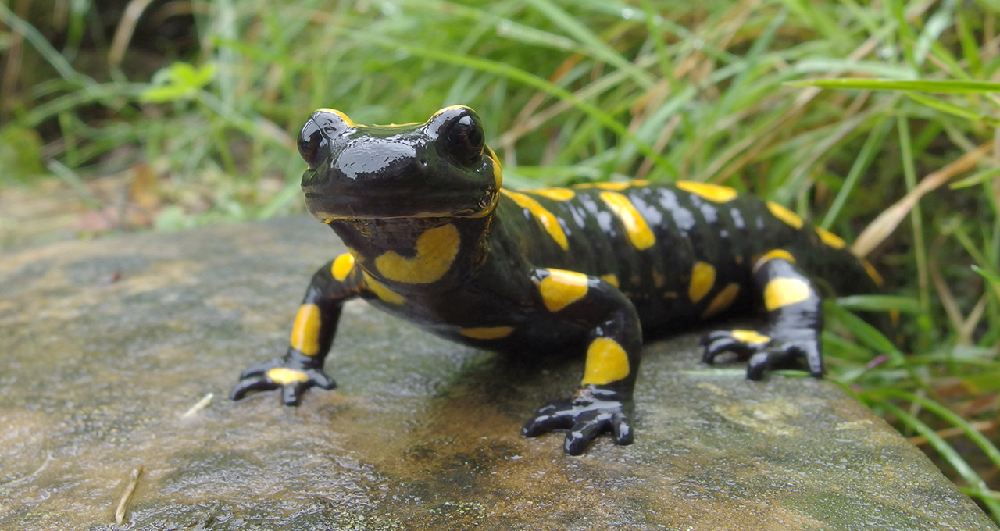
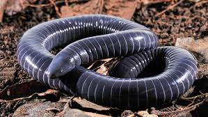
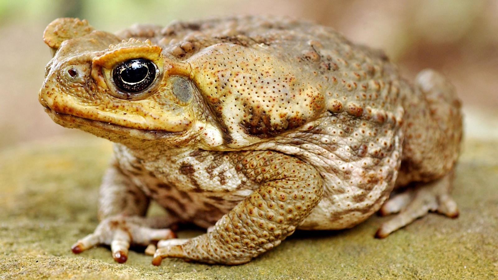
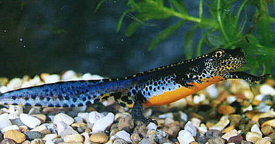

There are over 5,000 species of frog.
Frogs don't need to drink water as they absorb it through their skin.
A frog's call is unique to its species, and some frog calls can be heard up to a mile away.
Some frogs can jump over 20 times their own body length; that is like a human jumping 30m.

These amphibians have a long, slim body and a long tail. They usually have four legs of about the same length. Like all amphibians, they spend part or all of their lives in the water. Some species have lungs and breathe air as adults, while a few keep gills for breathing underwater all through their lives.

Caecilians are the world's only amphibians with tentacles. Caecilians have organs in their heads that can sense vibrations. Caecilians get their name from the Latin word “caecus,” which means blind. But some species do have eyes capable of distinguishing between light and dark.
Newts have the ability to regenerate limbs, eyes, spinal cords, hearts, intestines, and upper and lower jaws! Some newts can also hold their breath for up till 45 minutes underwater.

They have rough, 'warty' skin and tend to crawl rather than hop. Common Toads produce a toxin from a pair of glands on their back which makes them distasteful to would-be predators.

The alpine newt is a species of newt native to continental Europe and introduced to Great Britain and New Zealand. Adults measure 7–12 cm and are usually dark grey to blue on the back and sides, with an orange belly and throat.